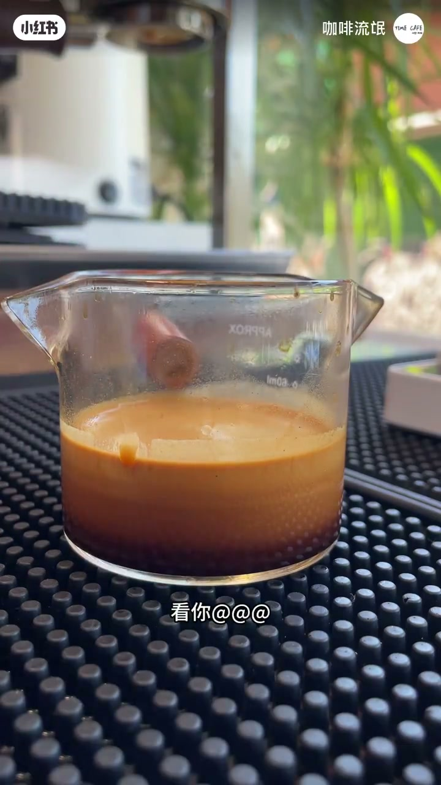
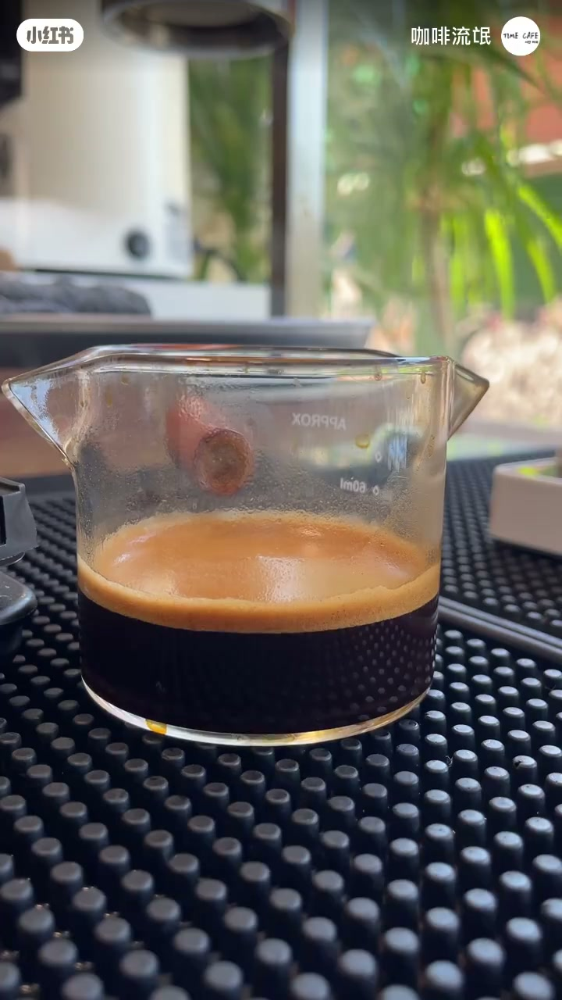
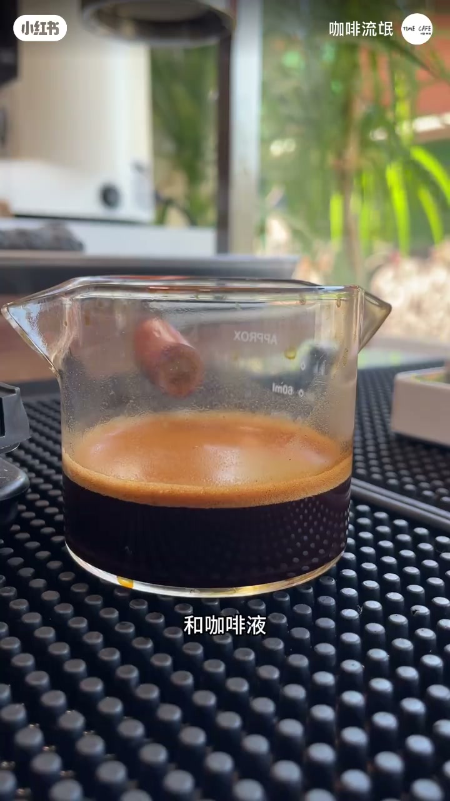
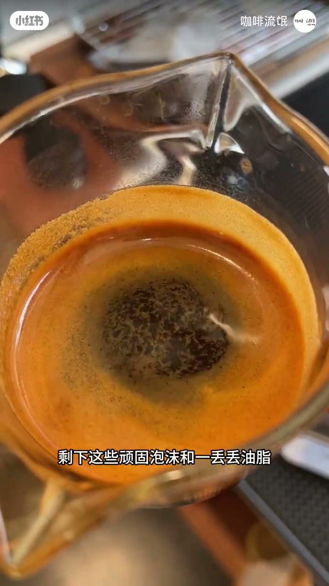
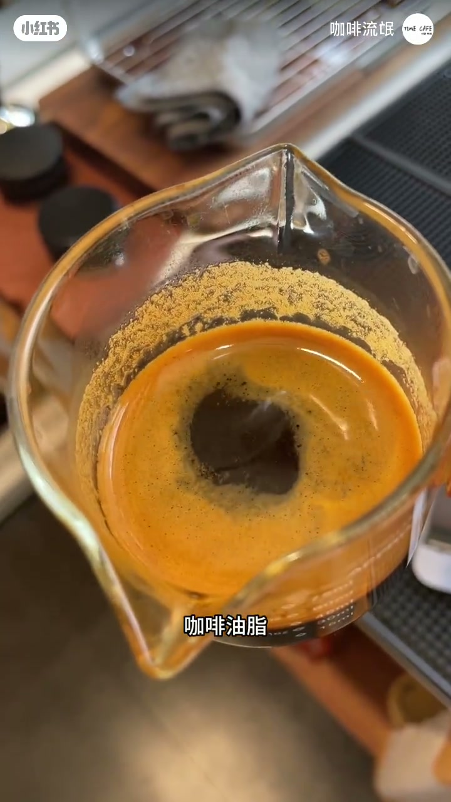

内容要点
作者嘲讽卖豆视频「看油脂、看萃取状态」的话术，用快进消泡把真相钉死：表面那层很快消退的东西，主要是萃取时咖啡粉排出的二氧化碳、少量其他气体、咖啡液与零星油脂形成的混合泡沫——不是卖家口中的「满杯油脂」。浓缩里确实有油脂（像花生一样种子都有），但那不是上面的泡沫；把泡沫当油脂指标，是在拿智商摩擦。
知识结构
卖豆人拍「看油脂看萃取」；作者快进演示泡沫很快就消。
点破「哪有那么多油脂」：成分是 CO₂ + 少量气体 + 咖啡液 + 零星油脂的混合泡沫。
晃一下剩顽固泡沫与一丢丢油脂；泡沫消退后颜色变深。
浓缩有油脂≠上面泡沫；油脂像花生油一样种子本有；话术=智商税。
看浓缩：先分清「会消退的泡沫」与「液面里真正的油脂」。泡沫消退变深是正常物理过程，不能当豆质或新鲜度的神话指标；油脂有，但含量与话术不成正比。
00:00-00:11话术开场：看油脂不如看泡沫会消
开场直接点名卖咖啡豆的人拍视频「看着油脂、看着萃取状态」，语气嘲讽这类表演式品鉴。作者说今天快进看这到底是啥——画面里浓缩表面那层厚厚的金棕色泡沫，用不了多久就消了。
第一刀落在直觉上：咖啡豆哪有那么多油脂？观众若只听卖家口播，很容易把「厚 crema/泡沫」误当成「油多＝豆好」。


00:11-00:25成分拆解：CO₂混合泡沫不是「油脂」
作者不知道「哪个 RB 开始传的」——这层被叫成油脂的东西，其实是萃取过程中咖啡粉排出的二氧化碳，加上一丢丢其他气体、咖啡液，以及零星点点的咖啡油脂，共同产生的混合泡沫。
关键词是「混合泡沫」和「零星点点」：承认有极少量油脂，但主体不是油；把主体叫成油脂，才是营销夸大。

00:25-00:44晃杯残留与真正油脂
等不及就晃一下：剩下顽固泡沫和一丢丢油脂；随着泡沫消退，颜色也变深。画面俯拍把「顽固泡沫」钉在字幕上，让观众看到消退后剩下的东西很少。
收束三句：浓缩里面是有油脂的，但它并不是上面的泡沫；咖啡油脂和花生里的油脂一样，所有种子都有油脂；说白了，这类话术就是拿智商在地上摩擦。


完整转录（19段）
以下文本由 Whisper medium 模型自动转录，可能存在少量识别误差，已尽可能修正明显 ASR 错字。
看没看过卖咖啡豆的人拍视频说
看着油脂看着萃取状态
看你马来哥逼啊
今天咱就快进看看这到底是啥
看看用不了多久泡沫就消了
咖啡豆哪有那么多油脂
咱也不知道哪个RB开始传的
这还成油脂了
这就是萃取过程中咖啡粉排出的二氧化碳
和一丢丢其他气体和咖啡液
和零星点点的咖啡油脂产生的混合泡沫
等不及了不等了
晃一下剩下这些顽固泡沫和一丢丢油脂
随着泡沫的消退颜色也变深了
说白了浓缩里面是有油脂的
但它并不是上面的泡沫
咖啡油脂和你吃的花生里面含油脂一样
所有种子都有油脂
说白了它就是拿你智商在地上摩擦